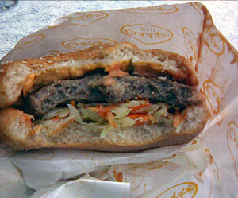

montagsplausch
Rezepte
Getränke
Über
Alle Rezepte
Fleisch
Maxi Beefy mit Käse
3 von 6
Maxi Beefy aus dem Cindy

Foto vom Abend
Gekocht am Montag, 30. Juli 2007
Montagsplausch Nr. 200. Der Abend hiess «The Simpsons Movie».
Wetter
?
Getränke
X-Flaschen Bier
Am Tisch
Marcos, Frenzis, Fässler, Rafi, Mirjam, Oli, Gäbi und Beni